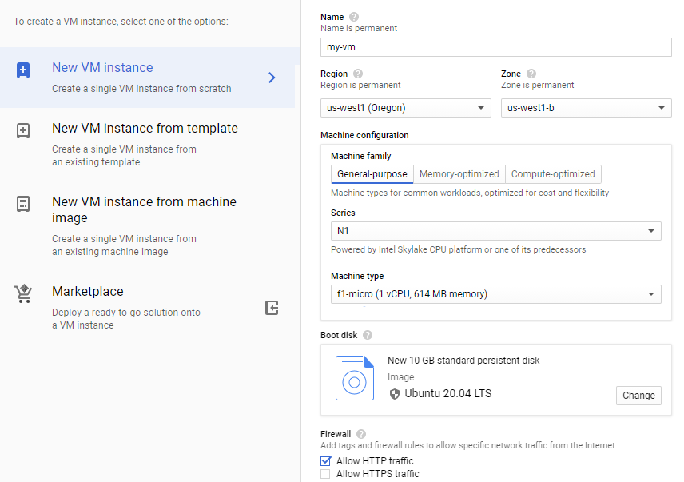
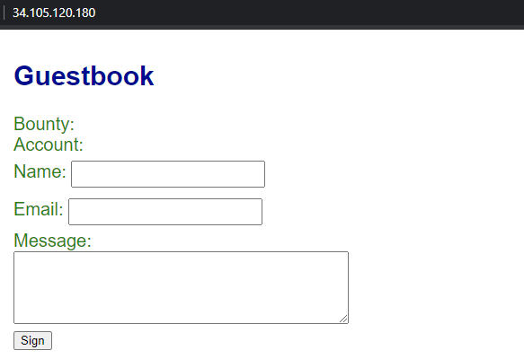
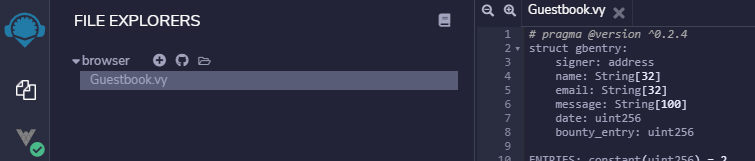
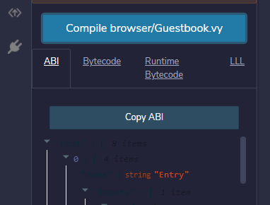
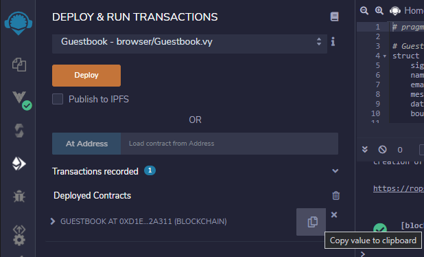
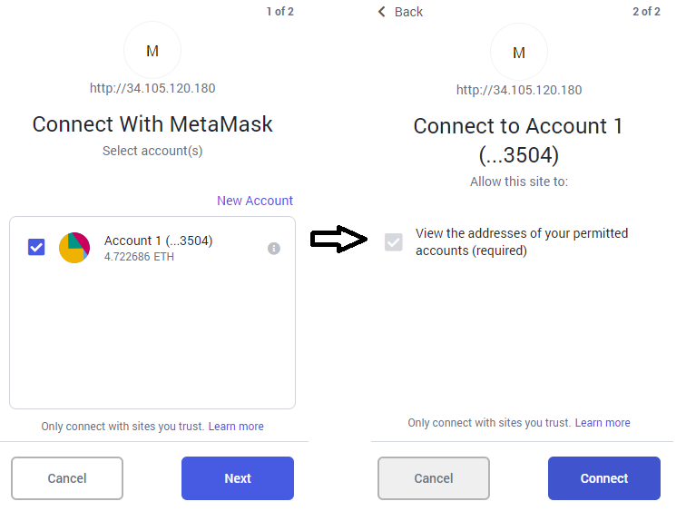
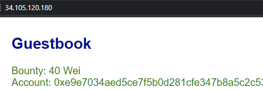

In this lab, we will create a fully functional single-page DApp using Vyper to implement the smart contract and web3.js to implement the static front-end. We will deploy the smart contract to the Ropsten network and the front-end to a VM on Google Cloud.
To begin with, visit the Google Cloud console and create a Ubuntu 20.04 VM
Install Ubuntu 20.04 VM
- Go to Compute Engine in Google Cloud Console
- Create instance
- Place in zone
us-west1-b - Select Ubuntu 20.04 for Boot disk
- Enable HTTP

Setup VM
sshinto instance

- Install the
nginxweb server and clone the course repository
sudo apt update -y sudo apt install -y nginx git clone https://github.com/wu4f/cs410b-src
- Change the ownership of the default directory that
nginxuses to serve content, then change into the guestbook directory and move the frontend code to the web server's default directory
sudo chown -R ${USER} /var/www/html
cd cs410b-src/guestbook
mv www/* /var/www/html
- Go back to the Compute Engine console and click on the External IP address.
- Ensure that the Guestbook page shows up. It will be blank since we have not yet deployed our smart contract. Keep this browser window open.

The guestbook DApp we will implement comes with a twist. In order to add an entry, a signer must supply funds to the contract. Specifically, each entry has a "bounty" associated with it that indicates the amount of Wei that was paid by the signer of the entry when signing the guestbook.
Then, visit Remix and copy and paste the code in vyper/Guestbook.vy into it.

Then, examine the code:. The first part of the snippet below sets up the guestbook entry struct that contains all of the information about the entry including the amount of Wei (bounty_entry) that was used to add the entry to the guestbook. It then instantiates a 3-entry guestbook (gb). Storage variables to track the owner of the contract and the minimum value of bounties in the guestbook are also defined. Finally, we declare an Event called Entry. Events are used to notify external entities (such as web browsers) whenever a specific action has occurred in the contract. In this case, you can think of it as a push notification from the smart contract to the web interface.
vyper/Guestbook.vy
# pragma @version ^0.2.4
struct gbentry:
signer: address
name: String[32]
email: String[32]
message: String[100]
date: uint256
bounty_entry: uint256
ENTRIES: constant(uint256) = 3
owner: public(address)
gb: public(gbentry[ENTRIES])
bounty: public(uint256)
event Entry:
value: uint256The code is followed by the contract constructor (__init__()). Examine the code and answer the following questions in your lab notebook
- What are the initial values for the bounties in each of the entries?
- What is the purpose of the
convert()call?
Next, is a call that is only used internally to update the storage variable that tracks the minimum bounty. This value is accessed by the web frontend in order to ensure that a new signer supplies sufficient funds to add an entry to the guestbook.
@internal
def update_bounty():
minimum: uint256 = 0
for i in range(ENTRIES):
if (minimum == 0) or (self.gb[i].bounty_entry < minimum):
minimum = self.gb[i].bounty_entry
self.bounty = minimumThe main functionality for the contract is in its sign() function shown below.
vyper/Guestbook.vy
@external
@payable
def sign(name: String[32], email: String[32], message: String[100]):
assert msg.value > self.bounty
for i in range(ENTRIES):
if self.gb[i].bounty_entry == self.bounty:
self.gb[i].signer = msg.sender
self.gb[i].name = name
self.gb[i].email = email
self.gb[i].message = message
self.gb[i].date = block.timestamp
self.gb[i].bounty_entry = msg.value
break
self.update_bounty()
log Entry(self.bounty)The call takes the parameters for the new entry, asserts that the amount of money that is supplied (msg.value) is greater than the minimum bounty (self.bounty), then finds the entry with the minimum bounty and replaces it with the new one. It then updates the value of the minimum bounty and emits an Entry event that includes the minimum bounty within it.
The last two functions support the ability for the contract to selfdestruct() and the contract's fallback function. Examine the code and answer the following question:
- Who is able to call the function that self-destructs the contract?
- Who receives the contract's funds when this happens?
Compile the contract in Remix. The ABI should be returned upon successful compilation. In order for the web frontend to interact with our smart contract, we will need to configure it with this ABI. You can either keep this window open or copy and paste the ABI to a file so we can configure the frontend web application with it.

Then, in the "Deploy & Run Transactions" tab and deploy the contract onto the Ropsten network. Upon successful deployment, find the contract under "Deployed Contracts" and copy its address to the clipboard. Make a note of its address and the button that allows you to copy it to the clipboard. You will need this address to configure the frontend web application to point to it. You can either keep this window open or copy and paste the address to a file for later use.

Go back to your Compute Engine instance and the Web3 frontend for the smart contract that you brought up earlier in /var/www/html. As is typical for a single-page application, it consists of 3 types of files: an HTML file for the application's interface (index.html), a Javascript file implementing its functionality (guestbook.js), and a style file (style.css).
First, we examine the HTML. At the top of the page are two elements that are initially empty (bounty and account), but will eventually be filled in via Javascript code that obtains the minimum bounty from the contract and the wallet address being used from Metamask.
/var/www/html/index.html
<div>Bounty: <span id="bounty"></span></div>
<div>Account: <span id="account"></span></div>Next, is the form that will be used to sign the guestbook. It has fields for the name and email of the signer, as well as the message the signer wants to leave. After the form input elements are defined, a submission button with an id of sign is defined. We will register a listener on this button for when it is pressed that will then perform the form submission.
<div>
<label for="name">Name: </label>
<input id='name' type='text' name='name'>
</div>
<div>
<label for="email">Email: </label>
<input id='email' type='text' name='email'>
</div>
<div>
<label for="message">Message: </label><br>
<textarea id="message" rows=2 cols=50 name="message"></textarea>
</div>
<button id="sign">Sign</button>After the form is defined, the next part of the page contains the actual guestbook entries pulled from the contract. As the code shows, it consists of an empty with an id of entries. As with bounty and account, this will be filled in by Javascript code.
<h2>Entries</h2>
<div id="entries"></div>Finally, we include all scripts that are necessary to implement the functionality. These typically are included at the end of the page since they will reference objects that are within the document. The first script pulls down the latest Web3 library from npm that will be used to call the guestbook contract and read its state. The second script implements our guestbook application code. Finally, the last script performs an in-line update of the 3 elements in the HTML that indicate the minimum bounty value in the contract, the wallet address that is currently selected in Metamask, and the current entries in the guestbook.
<script type="text/javascript" src="https://cdn.jsdelivr.net/npm/web3@latest/dist/web3.min.js"></script>
<script type="text/javascript" src="guestbook.js"></script>
<script type="text/javascript">
updateBounty();
updateAccount();
updateEntries();
</script>The main application functionality is in guestbook.js file. The code initially checks to see whether or not a browser-based wallet is installed via window.ethereum. It then instantiates a Web3 interface on it. The code then attempts to enable use of it. This prompts the user to allow the wallet to be used with the guestbook application in the browser.
/var/www/html/guestbook.js
const web3 = new Web3(window.ethereum);
window.ethereum.enable();
The next part of the code configures the web application to use the contract we have just deployed. First, set the ABI for the contract by replacing <FMI> (fill-me in) with the contract's ABI:
/var/www/html/guestbook.js
# var GuestbookABI = <FMI>;
var GuestbookABI = [{"name":"Entry","inputs" ... "gas":1301}];Next, the code instantiates the contract using the ABI and the address of the deployed contract. Fill in the contract address in the call that instantiates the contract within Javascript:
# var Guestbook = new web3.eth.Contract(GuestbookABI,'<FMI>');
var Guestbook = new web3.eth.Contract(GuestbookABI,'0xd1e3c...a311');The next part of the Javascript code implements functionality that updates the web interface with values pulled from the contract. updateAccount() requests the address of the active wallet from Metamask, then accesses the DOM to attach it to the "account" HTML element.
/var/www/html/guestbook.js
async function updateAccount() {
const accounts = await window.ethereum.request({ method: 'eth_requestAccounts' });
const account = accounts[0];
const accountNode = document.getElementById("account");
if (accountNode.firstChild)
accountNode.firstChild.remove();
var textnode = document.createTextNode(account);
accountNode.appendChild(textnode);
}updateBounty() requests the value of the bounty from the smart contract by calling getter of the contract's bounty storage variable. It then calls updateBountyUI() which accesses the DOM to update the "bounty" HTML element with it.
async function updateBounty(){
const bounty = await Guestbook.methods.bounty().call();
updateBountyUI(bounty);
}
function updateBountyUI(value){
const bountyNode = document.getElementById("bounty");
if (bountyNode.firstChild)
bountyNode.firstChild.remove();
var textnode = document.createTextNode(value + " Wei");
bountyNode.appendChild(textnode);
}updateEntries() goes through each entry in the array of guestbook entries (gb) in the smart contract. It then creates DOM elements that contain the information in each entry and attaches it to the "entries" element in the DOM. A snippet of the code that performs this operation is shown below:
async function updateEntries(){
const entriesNode = document.getElementById("entries");
...
for (var i = 0 ; i < 3; i++) {
var entry = await Guestbook.methods.gb(i).call();
const nameAndEmail = document.createTextNode(
entry.name + " <" + entry.email + ">"
);
...
entriesNode.appendChild(p);
}
}The next part of the Javascript code implements functionality that calls sign() function in the guestbook contract with funds from the client's connected wallet. The code gets the values of the wallet account and the form submission fields. It also calls the contract's getter function for the public bounty value: the minimum bounty across the entries currently in the guestbook. The code then calculates a bid that is 10 Wei more than this minimum, constructs transaction parameters specifying the amount to be sent, then calls the guestbook contract's sign() function with the form fields. Note that in the time that the bounty is retrieved and the call to sign() is made, another sign() transaction might occur, rendering our bid insufficient. This would then require us to modify the transaction to increase the bid.
/var/www/html/guestbook.js
async function sign() {
const accounts = await window.ethereum.request({ method: 'eth_requestAccounts' });
const account = accounts[0];
const name = document.getElementById("name").value;
const email = document.getElementById("email").value;
const message = document.getElementById("message").value;
const bounty = await Guestbook.methods.bounty().call();
bid = parseInt(bounty) + 10;
const transactionParameters = {
from: account,
gasPrice: 0x1D91CA3600,
value: bid
};
await Guestbook.methods.sign(name, email, message).send(transactionParameters);
};The last part of the Javascript code defines two event handlers. The first is to handle events sent from the guestbook contract to the application. When the guestbook is signed and an entry has been changed, the smart contract emits an event and attaches the current value of the bounty to it. The handler takes this event, pulls out the value of the new minimum bounty (event.returnValues.value), then updates the bounty DOM element in the UI. It then calls updateEntries() to get the updated guestbook.
/var/www/html/guestbook.js
Guestbook.events.Entry().on("data", function(event) {
updateBountyUI(event.returnValues.value);
updateEntries();
});The second handler is to handle when the user clicks on the sign button on the web page. It simply invokes the previously described Javascript sign() function.
/* Create submission button. Then, register an event listener on it to invoke sign
* transaction when clicked */
const button = document.getElementById('sign');
button.addEventListener('click', () => {
sign();
});Go back to the browser that has the guestbook web site loaded and then reload the page to get the updated code that includes your contract information. If prompted, connect your Metamask wallet up to the site. Add 3 different messages to the guestbook using your PSU e-mail address.
- Take a screenshot showing the final guestbook and include it in your lab notebook

When complete, you may stop your VM if you wish to save money. Since you may need the VM for your final project, do not delete it.